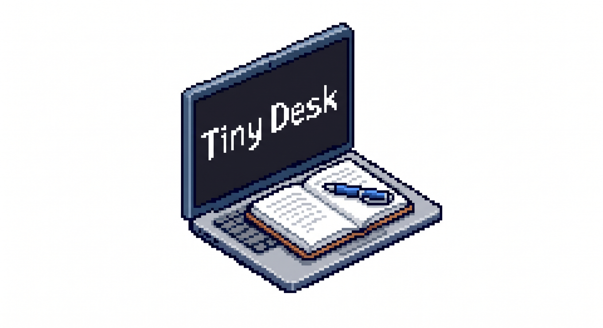

A simple Windows utility to block your keyboard or touchpad.
I built this tool out of personal frustration. My study desk is very small and only has enough room for my laptop. Whenever I needed to write, I had to place my notebooks directly on top of my keyboard, which triggered accidental clicks and keystrokes.
TinyDesk solves this by letting you toggle your keyboard and touchpad on/off using global hotkeys!
Standalone Windows executable. Requires Administrator privileges to run.
Ctrl + T — Enable TouchpadCtrl + K — Enable All (Reset)Ctrl + Shift + M — Show/Hide WindowCtrl + Shift + C — Exit Application